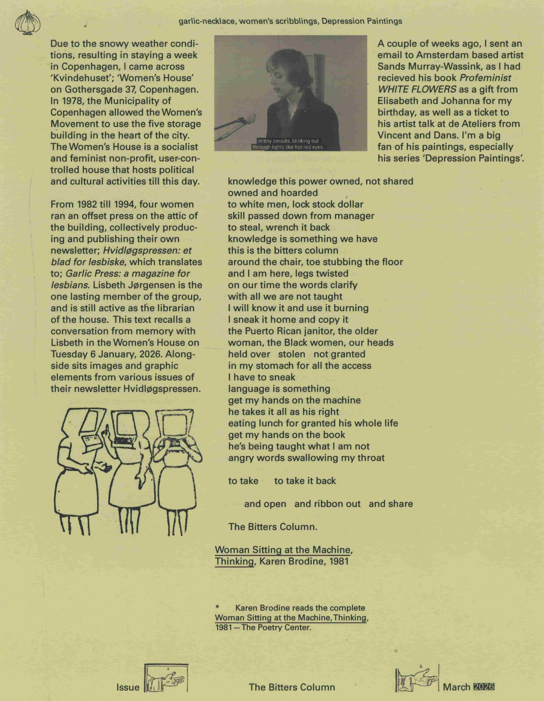
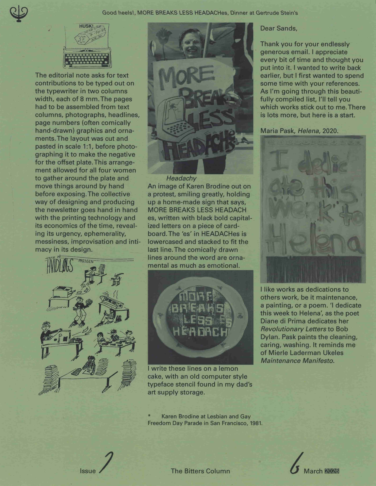
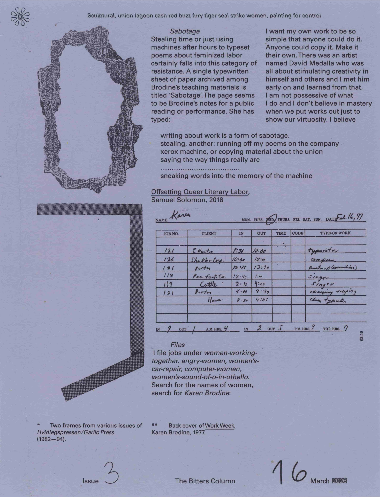
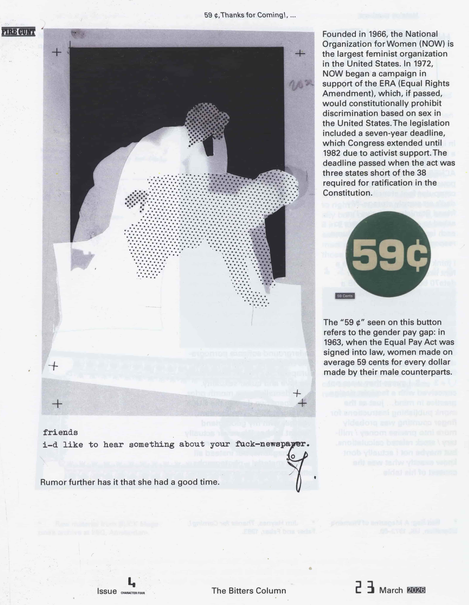
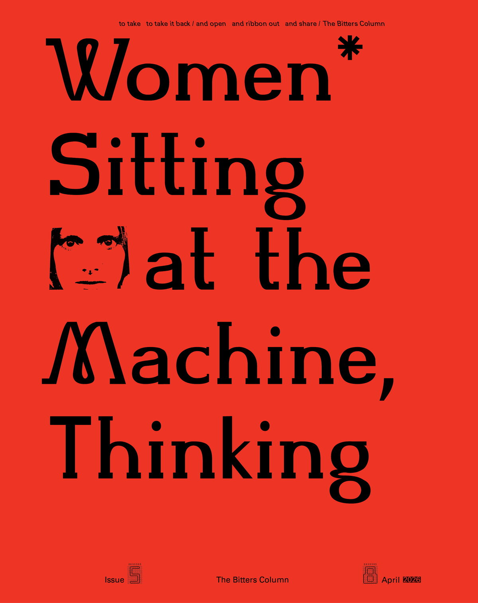
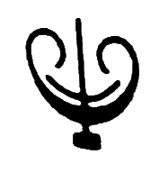

The Bitters Column is a bi-monthly publication about forming a feminist graphic design practice in conversation with others.
Issue 1, 2, and 3 was compiled in March 2026 with contributions by Lisbeth Jørgensen, Karen Brodine and Sands Murray-Wassink.
Issue 4 (TBC).
Issue 5 is a special issue publishing a text titled ‘Women* Sitting at the Machine, Thinking’, written as an expanded editorial note of sorts, published in April 2026 on this webpage.
Issue 6 is a spatial extension of the publication comprising lectures, performances, blow-ups, and much more, according to a ‘just-in-time’ mode of production at Paradise, Den Haag throughout April and May 2026. (TBC).
Stan Zielinski selects the footer numbers for each issue.
*
Contact: malvaaskerup@gmail.com
*Subscribe to TBC*
Price 10€ (+shipping)
A subscription includes the monthly issue of The Bitters Column. Send an inquiry via email including your name and post address to become a subscriber.
This is a research project into editorial practices as means for collaborative work, initiated by graphic designer Malva Askerup, as part of graduation project 2026.
Web design and development: Malva Askerup





